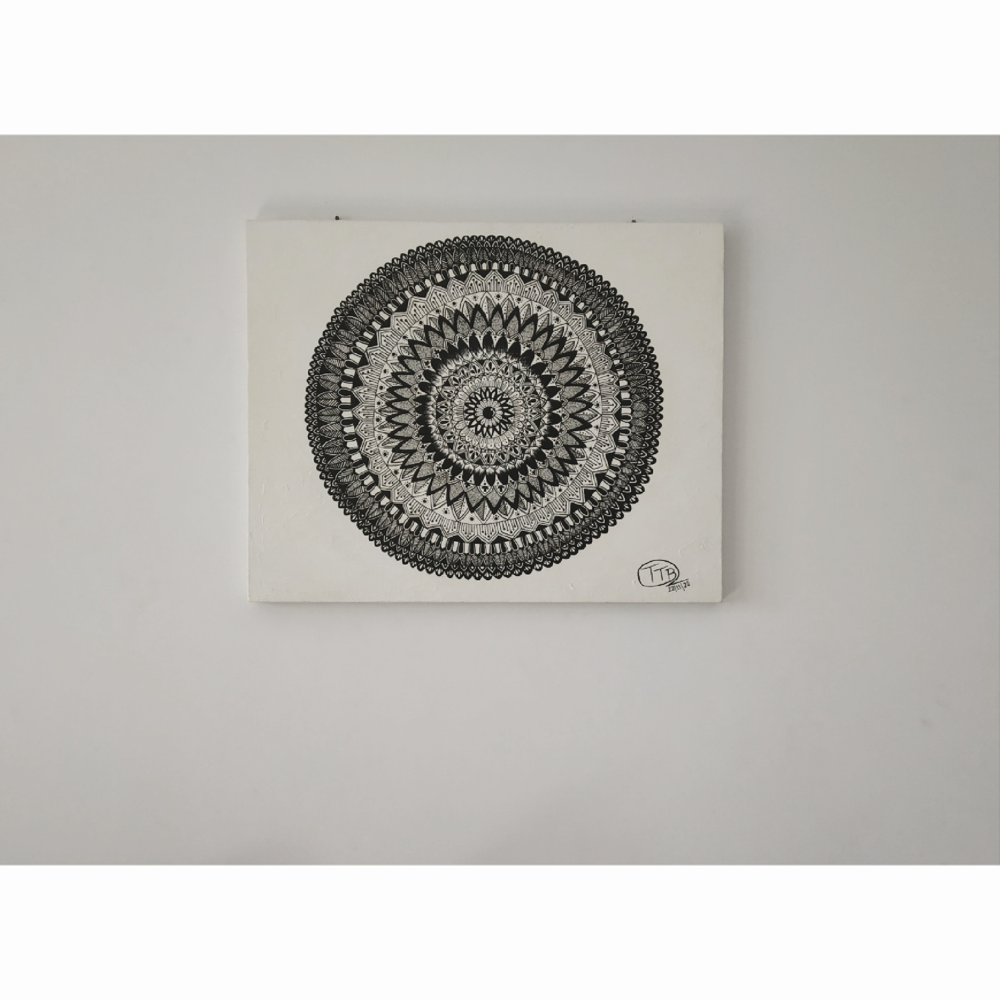

FLOWER ART
In frame is a mandala design following a format of petal design which is giving a nice flower look.
Mandala design can be drawn or designed using any type of design or pattern of lines.
Mandala is Sanskrit word for “circle” or “discoid object”,
it is a geometric design that holds a great deal of symbolism in Hindu and Buddhist cultures.
Materials Required :
1 Canvas (24*30) inch.
1/2 number paint brush
black and white acrylic colour’s.
thread tied to Pencil/big compass/big round container.
steps one can follow(if needed) :
Take the canvas and use any circular object or a big compass or tie a thread to a pencil
and other end to any pointed object and keep it in the middle of the canvas board and make a circle
and gardually make small circles's inside the big circle.
Take a paint brush and start outlining the circles with black paint .
After all this is done start making designs using the paint brush slowly and
afte the designs are filled in the circles, the drawing will be done.